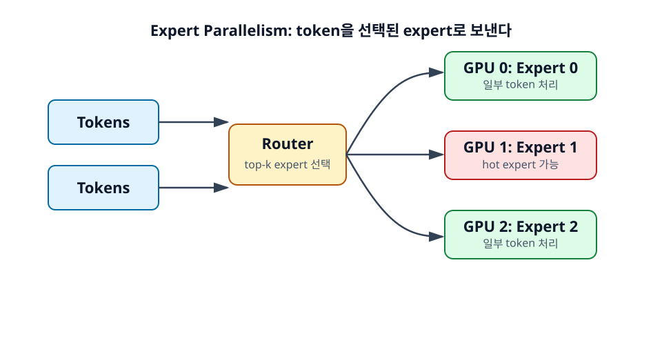

12장. Expert Parallelism¶
Expert Parallelism은 Mixture-of-Experts(MoE) 모델에서 등장하는 병렬화 방식이다. Dense model은 모든 token이 대체로 같은 parameter 경로를 지나지만, MoE 모델은 token마다 일부 expert만 선택해 사용한다. Expert Parallel은 이 expert들을 여러 GPU에 나누어 배치한다.

학습 목표¶
- MoE 모델의 기본 구조를 이해한다.
- Expert Parallel이 expert를 여러 GPU에 나누는 방식임을 설명한다.
- Hot expert와 load balancing 문제를 이해한다.
12.1 MoE 모델의 기본 개념¶
MoE 모델은 여러 expert subnetwork를 가지고 있고, 각 token은 router에 의해 일부 expert로 보내진다. 모든 parameter를 매 token마다 사용하는 것이 아니라, 선택된 expert만 활성화한다는 점이 핵심이다.
12.1.1 모든 parameter를 매 token마다 쓰지 않는다¶
MoE 모델은 전체 parameter 수가 매우 클 수 있지만, 한 token이 실제로 사용하는 parameter는 그중 일부다. 예를 들어 expert가 64개 있고 token마다 2개 expert만 선택한다면, 매 token은 전체 expert 중 작은 부분만 통과한다.
이 구조는 큰 모델 용량을 제공하면서 token당 계산량을 상대적으로 제한할 수 있게 한다. 그래서 "전체 parameter"와 "활성 parameter"를 구분해야 한다.
12.1.2 Router가 일부 expert를 선택한다¶
Router는 각 token을 어떤 expert로 보낼지 결정한다. 보통 top-1 또는 top-2 expert를 선택한다. 선택된 expert는 token을 처리하고, 결과는 다시 합쳐져 다음 layer로 전달된다.
Router의 선택이 고르게 분포하면 여러 expert가 균형 있게 사용된다. 반대로 특정 expert에 token이 몰리면 병목이 생긴다.
12.1.3 활성 parameter와 전체 parameter를 구분해야 한다¶
MoE 모델을 설명할 때 "총 parameter가 크다"는 말만 보면 오해하기 쉽다. 실제 추론 비용은 token마다 활성화되는 expert 수와 expert 크기에 좌우된다. 하지만 serving 메모리 관점에서는 전체 expert weight를 어딘가에 올려야 하므로 전체 parameter도 중요하다.
즉 MoE는 계산량과 메모리, 통신을 따로 봐야 한다.
12.2 Expert Parallel의 정의¶
Expert Parallel은 expert를 여러 GPU에 나누어 배치한다. Token은 router가 선택한 expert가 있는 GPU로 이동한다. 이때 token routing과 all-to-all communication이 성능의 핵심이 된다.
12.2.1 Expert를 여러 GPU에 나누어 배치한다¶
expert가 많으면 한 GPU에 모두 올리기 어렵다. Expert Parallel은 GPU 0에 expert 0-7, GPU 1에 expert 8-15처럼 expert를 분산 배치할 수 있다. 각 GPU는 자신이 가진 expert로 들어온 token을 처리한다.
이 방식은 MoE의 전체 expert weight를 여러 GPU에 나누는 데 도움이 된다.
12.2.2 Token이 선택된 expert가 있는 GPU로 이동한다¶
Router가 token을 expert 12로 보내기로 했다면, expert 12가 있는 GPU로 token representation이 이동해야 한다. 여러 token이 여러 GPU의 expert로 흩어졌다가 다시 모이는 과정이 생긴다.
Dense model의 TP 통신과는 다른 형태의 통신 패턴이다. Expert Parallel에서는 token dispatch와 combine이 중요하다.
12.2.3 All-to-all communication이 중요해진다¶
여러 GPU가 서로 token을 보내고 받는 all-to-all communication이 MoE serving의 핵심 비용이 된다. 각 GPU는 자기 token 일부를 다른 GPU로 보내고, 다른 GPU에서 온 token을 처리한다.
Interconnect가 느리거나 token 분포가 불균형하면 expert parallel 효율이 크게 떨어질 수 있다.
12.3 Expert Parallel의 운영 이슈¶
MoE serving은 dense model serving과 다른 운영 문제를 만든다. 특히 hot expert, load balancing, routing 안정성이 중요하다.
12.3.1 Hot expert 문제¶
Hot expert는 특정 expert에 token이 과도하게 몰리는 현상이다. 어떤 GPU에 hot expert가 있으면 그 GPU만 바빠지고 다른 GPU는 상대적으로 한가할 수 있다. 전체 latency는 가장 느린 GPU에 맞춰질 수 있으므로 병목이 된다.
Hot expert는 workload 특성, router 학습, prompt 분포에 따라 달라질 수 있다.
12.3.2 Load balancing¶
MoE 모델은 학습 단계에서도 expert load balancing이 중요하지만, serving에서도 중요하다. 운영 중 특정 expert가 지속적으로 과부하되면 throughput과 tail latency가 나빠진다.
일부 시스템은 expert placement, token routing, capacity factor, batching 전략으로 이 문제를 완화한다. 개발자 입장에서는 MoE 모델 serving이 dense model보다 통신과 routing 지표를 더 신경 써야 한다는 점을 기억하면 된다.
12.3.3 MoE serving은 dense model serving과 다르다¶
Dense model에서는 모든 token이 같은 layer를 통과한다. MoE에서는 token마다 다른 expert 경로를 지나므로 실행 패턴이 더 동적이다. 이 동적 routing은 모델 용량 측면에서는 장점이지만, serving 시스템에는 scheduling과 communication 복잡도를 추가한다.
따라서 MoE 모델은 "parameter가 크지만 활성 parameter가 작다"는 장점만 보고 선택해서는 안 된다. 실제 serving 환경의 interconnect, batch 특성, router load balance를 함께 봐야 한다.
정리¶
Expert Parallel은 MoE 모델의 expert를 여러 GPU에 나누는 방식이다. Token은 router가 선택한 expert가 있는 GPU로 이동하고, 결과는 다시 합쳐진다. 이 과정에서 all-to-all communication과 expert load balancing이 중요해진다.
점검 질문¶
- MoE에서 전체 parameter와 활성 parameter를 구분해야 하는 이유는 무엇인가?
- Expert Parallel에서 all-to-all communication이 중요한 이유는 무엇인가?
다음 장으로¶
다음 장부터는 long-context 추론으로 넘어간다. 긴 prompt와 긴 KV cache가 왜 별도의 병렬화 전략을 요구하는지 살펴본다.